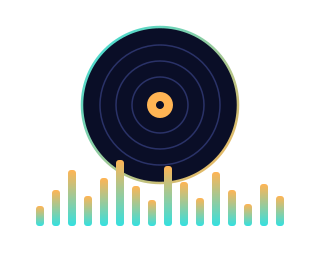

Music Popularity Analysis System
Track what the world is streaming, one chart at a time.
Stereo Pulse catalogs 19 tracks across six genres and turns popularity score, stream count, and growth rate into a live, editable dashboard.

Tracks catalogued
—
Average popularity
—
Leading genre
—
Total streams
—
Top 3 tracks by popularity
Only tracks scoring 50 or above qualify for the charts — Business Rule 1.